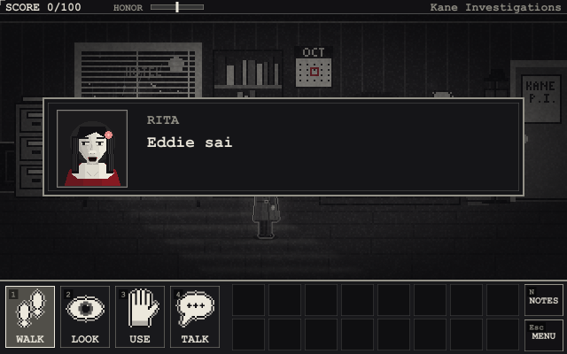
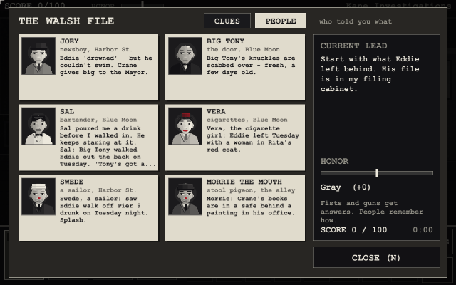
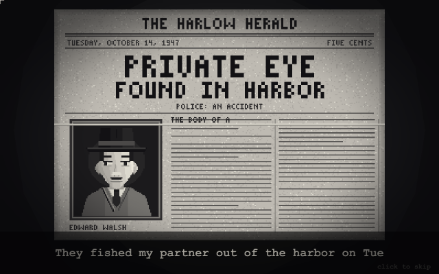

NOIR: The Midnight Ledger
Release 2Act One: Who Killed Eddie Walsh? · v5.14.1 · designed by Pieter De Villiers

Port Harlow, 1947. It has been raining for eleven days straight. Last night they fished your partner, Eddie Walsh, out of the harbor. The cops wrote it up as an accident. Funny thing - Eddie couldn't swim, so he never went near the water.
You are Sam Kane, private eye. Find out who killed Eddie - and then find out who's protecting the man who did it.
Seven locations, a hundred points, and more than one way for the case to end. The browser edition saves in your browser. The Windows download is a single .exe (no installer); Windows may warn that it's from an unknown publisher - choose "More info" then "Run anyway". Stuck? There's a walkthrough (spoilers!).
The case
- Seven locations, a hundred points - and four endings, only one of them the right one.
- Work things out: connect clues in your case notebook to deduce what nobody will tell you.
- Witnesses who lie, evidence that was planted, and conclusions that put the wrong person in a cell.
- An honor meter: get answers with patience, or with your fists and your .38. People remember which.
- Standoffs on a clock, a deadline at midnight, and three difficulty levels.
- Sierra-style deaths - and a few second chances, if you've earned them.
- Three looks at the press of a key: red accent, grayscale, or the original 1-bit.
New in Release 2
- Polished art: the rooms re-lit, detailed people with faces that blink and talk, close-up portraits whose mouths move, shadows, rain on the windows - and depth: the sky drifts as you walk.
- A storm-lit opening, a story before the title, and animated death and front-page screens.
- A richer sound: stereo music, footsteps on every floor, traffic, sirens and the rain.
- Play it all on the keyboard: arrow keys to walk, Enter to act, Q and 1-4 for verbs, I for your pockets.
- A PEOPLE page in the notebook, a play timer, and people who remember how you treated them.
- G switches the art back to Release 1's, and S the sound - compare for yourself.





Release 1, to compare
The first release (v5.4.4, 4 October 2026) - the same case, before the art and sound upgrade.
Both releases save in the same browser storage: a game saved in one shows up in the other.
Docs
- Player's manual - story, controls, deductions, honor, saving (no spoilers)
- Walkthrough - every step, every ending (spoilers)